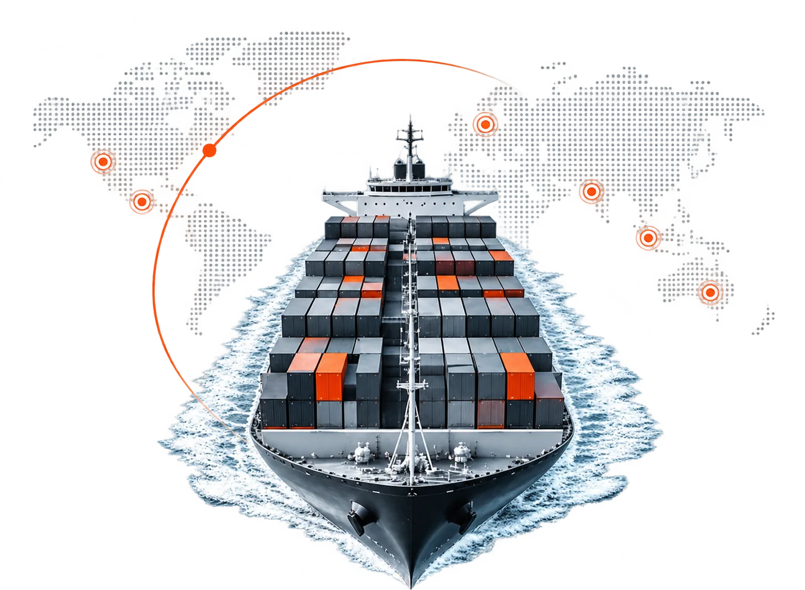

Connect
Open the web browser on your desktop, or add the bot on Telegram (no complex software installation required).
Actionable intelligence to help you prepare,
plan and reduce inspection risks.
A live strictness rating for every port — how hard the Port State Control inspection generally is.
The deficiencies this vessel is most likely to be written up for at this destination.
The vessel’s full performance scoring and risk analysis across the various PSC regimes.
Fleet level performance score card and risk analysis across the various PSC regimes.
No complex software. No bloat.
Just the exact answers you need,
in under 10 seconds.
Open the web browser on your desktop, or add the bot on Telegram (no complex software installation required).
Drop an IMO number & destination port.
Get insights directly to your device.
Our models analyse years of global PSC inspection records to give you accurate, data-driven insights.
